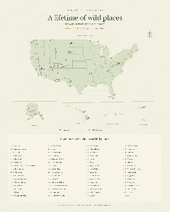
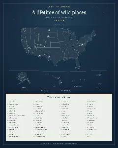
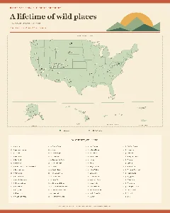
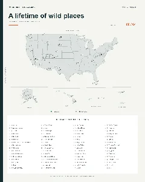
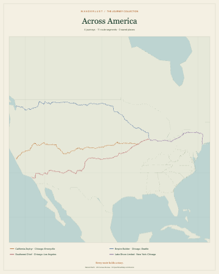
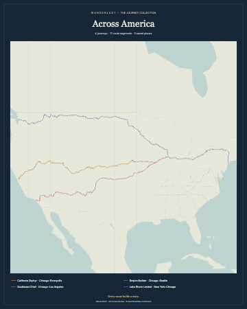
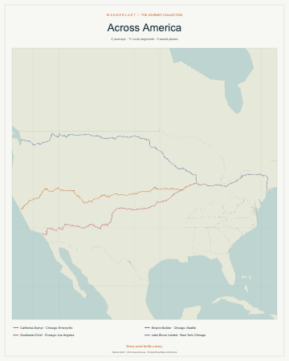

MAKE ROOM FOR A LITTLE
Route playback
Loading your map…
MAKE IT YOURS
Your preferences are saved on this device.
Map view
Drag the globe to explore; scroll to zoom.
3D and globe need WebGL. This device uses a 2D overview.
National parks, rail journeys and three flight examples.
Changing transport keeps the existing geometry. Use “Replace route” to search new endpoints or route options.
COLLECT MOMENTS, NOT THINGS
National Park Service list · Updated November 2026
CHOOSE YOUR COVER
One collection. Four ways to tell it.




Scroll to zoom · drag to pan · double-click to zoom · Home to fit
SAVE THE JOURNEY
Poster template



These adjustments change the exported image.
Add up to three detail maps. Drag or scroll inside an inset to adjust its view.
The map uses your current theme and view. Image framing can crop routes; KML keeps their complete geometry.
YOUR JOURNEYS, IN PRINT
Drag the map to position it. Scroll to change its scale. Home resets the composition.
Enable JavaScript to use the journey editor and save your itineraries.